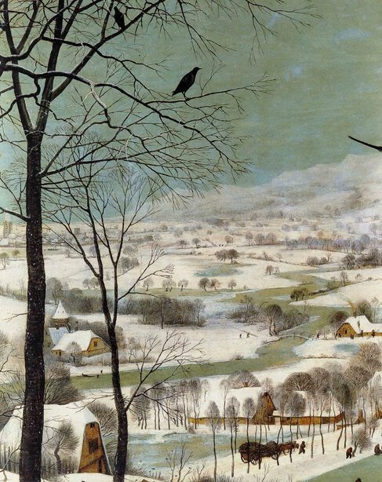

Pieter Bruegel,1525 - 1569,Northern Renaissance,Flemish,"Pieter Bruegel (also Brueghel) the Elder (Dutch: [ˈpitər ˈbrøːɣəɫ]; c. 1525-1530 – 9 September 1569) was the most significant artist of Dutch and Flemish Renaissance painting, a painter and printmaker from Brabant, known for his landscapes and peasant scenes (so called genre painting); he was a pioneer in making both types of subject the focus in large paintings.",http://en.wikipedia.org/wiki/Pieter_Bruegel_the_Elder,134
